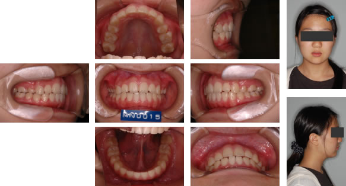

指定自立支援医療機関（育成医療・更生医療） 顎口腔機能診断医療機関

症例1) 叢生・上顎前突：上顎第一小臼歯を抜歯し治療した症例
治療前
初診時7歳の男の子です。上顎前突(出っ歯)で、将来的には歯が大きく、歯ぐきの骨(歯の入れ物)が小さいために叢生(ガタガタ)も予想される症例です。悪習癖として、唇が開いていて、口呼吸をしていました。副鼻腔炎とアデノイド肥大が認められ、耳鼻咽喉科にての治療を依頼しました。鼻呼吸ができるようになってから、口輪筋の訓練(口を閉じる訓練：口輪筋の賦活)や、良く噛む訓練を行いました(MFT:筋機能訓練)。小学校三年時に、上あご、下あごの成長の分析を行ったところ、下あごの成長が少なかったため(劣成長)、ヘッドギアを在宅時に使用してもらい、成長のコントロールを行いました。
下あごの成長を促進させるため、ヘッドギアという装置を家の中で使用していただきました。この装置はディズニーのファインディング・ニモという映画の中で、”ダーラ”ちゃんとうニモをいじめる女の子が使っていましたね。アメリカでは一般的な装置です。
成長終了後
第Ⅰ期治療終了時です。ヘッドギアーを家で一生懸命使ってくれたので、下あごの成長が促進され、上下のあごの骨のバランスが改善しました。しかし、歯の叢生(ガタガタ)を改善し、噛み合わせを作るために、上あごの左右第一小臼歯を抜歯し、下あごは拡大装置で広げて、歯を抜かないでマルチブラケット装置によって並べていく計画を立てました。
治療後
治療終了時です。上下の骨のバランスの改善、噛み合わせの改善、両方を達成することができました。以前は困難だった前歯で麺類などをかみ切るということもできるようになり、唇も自然に閉じ、口もとも綺麗になりました！。
症例2) 上顎前突：ヘッドギアを用いることにより非抜歯で治療した症例
治療前
初診時9歳の男の子です。上顎前突(出っ歯)で、お口を閉じることができないということを主訴に来院しました。検査の結果、下あごの骨が小さく(劣成長)、また、上下の前歯も前方に傾斜しているのが原因と考えられました。さらに、アドのイドや、口蓋扁桃がやや肥大し、鼻呼吸が困難で、口で息をしている(口呼吸)ことによっても症状が憎悪する原因の一つでした。これに関しては、耳鼻咽喉科にての治療を依頼しました。また、猫背の姿勢も認められ、姿勢の改善を指導しました。
下あごの成長をコントロールするため、この患者さんはストレートタイプのヘッドギアを在宅時に使用していただきました。
下あごの成長を促進させるため、ヘッドギアという装置を家の中で使用していただきました。この装置はディズニーのファインディング・ニモという映画の中で、”ダーラ”ちゃんとうニモをいじめる女の子が使っていましたね。アメリカでは一般的な装置です。
成長終了後
第Ⅰ期治療終了時です。ヘッドギアーを家で一生懸命使ってくれたので、下あごの成長が促進され、上下のあごの骨のバランスが改善しました。あとは、前歯の傾斜を改善するため、かみ合わせの治療に入りました。この患者さんは、上下の骨のバランスのほかに、歯槽骨(歯の入れ物)の発育も良好になったため、歯を抜かないでかみ合わせをマルチブラケット装置によって並べていく計画を立てました。
治療後
治療終了時です。上下の骨のバランスの改善、噛み合わせの改善、両方を達成することができました。以前は困難だった前歯で麺類などをかみ切るということもできるようになり、唇も自然に閉じ、口もとも綺麗になりました！
症例3) 上顎前突：ヘッドギアにより下あごの大きさを回復し噛み合わせを作った症例
治療前
初診時10歳の女の子です。下あごの骨が小さく、出っ歯の状態となっています。また、将来的に永久歯が生えてくると、著しい歯のでこぼこ（叢生）が予想されました。お口の中には、舌小帯と、上唇小帯というヒダ（写真の矢印）がありますが、この患者さんはその付着位置が悪く、歯並、発育、機能などに支障をきたしています。
Ⅰ期治療として、下あごの成長を促進するため、ヘッドギアを自宅で使用していただきました。また、小帯の治療のため、筋機能訓練（MFT）を行いました。
下あごの成長を促進させるため、ヘッドギアという装置を家の中で使用していただきました。この装置はディズニーのファインディング・ニモという映画の中で、”ダーラ”ちゃんとうニモをいじめる女の子が使っていましたね。アメリカでは一般的な装置です。
下あごが成長し、上下のあごの骨のバランスが整いました。いよいよ歯並び・かみ合わせの治療のスタートです。上唇の突出感の改善のため、上あごの第一小臼歯の抜歯し、上の前歯を後方へ移動しました。下あごは歯を抜かないで噛み合わせを作ることになり、審美マルチブラケットを装着し、機能的な噛み合わせを作ることになりました。
治療後
このように写真のような噛み合わせができました！横顔での唇の突出感も改善されました。この噛み合わせの安定と口もとをより美しくするために、筋機能訓練（MFT）を継続していただいてます。
症例4) 上顎前突：ヘッドギアを使うことにより抜歯せずに治すことができた症例
治療前
初診時6歳の出っ歯の女の子です。将来歯を並べる時に、なるべく歯を抜かないで治療するためにこの年齢からヘッドギアという装置を家で使っていただき、第一大臼歯を奥に移動させて前歯を後ろに下げる場所を作るというプランを立てました。
下あごの成長がまだ期待できるので、ヘッドギアという装置を家の中で使用していただきました。この装置はディズニーのファインディング・ニモという映画の中で、”ダーラ”ちゃんとうニモをいじめる女の子が使っていましたね。アメリカでは一般的な装置です。
成長終了後
この患者さんはヘッドギアをとてもよく使ってくれたので、6歳臼歯がいい場所に動いてくれました。そのため、歯を抜かないで上あごの前歯をコントロールできると判断いたしました。そこで、上下にブラケットをつけて歯を並べていきました。
治療後
この様に、横顔のシルエットもとても良くなり、笑顔も美しくなりました！
症例5) 上顎前突：上アゴの小臼歯を左右1本ずつ抜歯して出っ歯を治した症例
治療前
初診時11歳の女の子です。下あごの骨が小さく、上の前歯が前方にでている出っ歯の患者さんです。麺類は前歯で噛み切れなく、お口も閉じづらいとのことでした。
下あごの成長がまだ期待できるので、ヘッドギアという装置を家の中で使用していただきました。この装置はディズニーのファインディング・ニモという映画の中で、”ダーラ”ちゃんとうニモをいじめる女の子が使っていましたね。アメリカでは一般的な装置です。
Ⅰ期治療終了後
成長がほぼ終了し、下アゴの骨の大きさも整ってきました。いよいよ歯並びの治療に入ります。歯の凹凸と口唇の突出感を改善するため、上あごの第一小臼歯のみ左右一本ずつ抜歯をして、ブラケットをつけ並べ始めました。
治療後

歯を動かす処置が終了し、保定といって歯がための時期に入りました。これで、麺類なども前歯でかめるようになり、お口も閉じられるようになりました！前歯の噛み合わせを浅くしているのは、オーバートリートメントといって、過剰気味に治しておき、将来予想される後戻りに対応した治療の仕方です。
症例6) 上顎前突
治療前
下の歯が上のアゴの歯肉（口蓋）に当たっていて、噛み切ることが出来ません。口が閉じにくくなっていて、口を閉じると顎の先の筋肉がいつも緊張してます（梅干状隆起）。そのため、長く口を閉じることが出来ません。口が開いているので、唾液の循環が悪く、汚れがとれにくく、虫歯や歯肉炎になりやすく、口臭も気になります。場合によっては耳鼻疾患（アデノイド、口蓋扁桃、鼻炎など）との関連があり、チームアプローチが必要な場合があります。当院では耳鼻咽喉科との連携をはかっています。
治療後
歯が理想的な当たり方をしています。食べ物を噛み切ってよく咬む事が出来るようになりました。口が閉じやすくなったので、筋肉に力が入っていません。鼻先、上唇、下唇、オトガイがE-Line上にあり、審美的にも改善されています。口が閉じれるようになったので、唾液による自浄作用も回復し、歯肉炎も改善し、食べ物がよりおいしく感じられます。
旧HPに掲載されていた症例